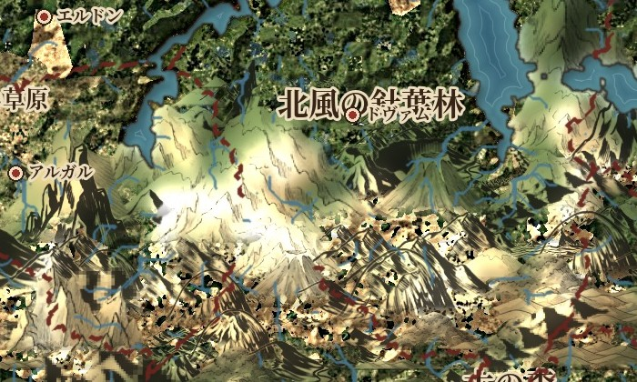
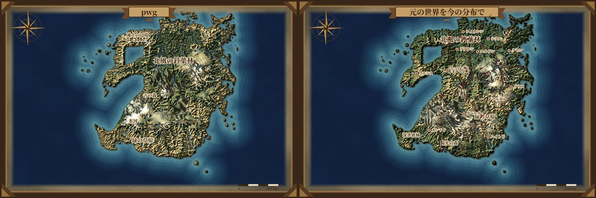

元の世界を「今の分布」で描く(検証 11-20)
概要: 前の3つの世界(Azgaar・PWG・簡易生成)の地形データを、記事再現の世界の「分布」に近づけて強調し、同じ山の部品方式で描き直しました。左が前の描き方、右が今回です。国境と首都も足しています。
ユーザー指示(11-20 03:39)
「見た目が良くなった理由のように元の地図を描いてみたら。山や地形の表情をデータを元にデフォルメする。地形を今の分布に強調するといいのでは」。
やったこと(元のデータはそのまま、値と分類だけ変える)
- 高さの分布を合わせる: 元の世界の「どこが高いか」の順番はそのままにして、高さの値の配り方を、記事再現の世界(低地が多く、高い山は少数で連なる)に合わせた。
- 植生を作り直す: 元の植生は使わず、記事再現と同じ考え方(北が寒い縦の傾き+標高で冷える+水(海・川)からの距離で湿る)で、高さと海岸から作り直した。
- 国は元のまま。国境線を点線で描き、各国の首都の印と仮の名前を足した。
- 山と色は、今の部品方式(山の絵は部品、色は地図の色)のまま。
結果(左: 前、右: 今回)
Azgaar
 絵番号 E097
絵番号 E097
絵番号 E098
PWG

絵番号 E099
簡易生成
 絵番号 E100
絵番号 E100
植生の割合の変化(陸の面積に対する割合・実測)
Azgaar(元): 砂漠・乾燥地が大半で、全体が砂色だった(目視)。今回: 針葉樹林28%・熱帯季節林20%・温帯落葉樹林15%・サバンナ10%・草原7%ほか。PWG・簡易生成も針葉樹林や落葉樹林など緑の群系が増え、砂漠は1〜2%に減った。
時間
| 全体の秒 | 置いた部品数 |
|---|
| Azgaar | 12.4 | 245 |
| PWG | 6.6 | 126 |
| 簡易生成 | 7.7 | 159 |
目視の評価
- 良い点: Azgaarの一面の砂色が、針葉樹林・草原・砂地の帯に変わり、世界らしく読める。PWG・簡易生成も緑の濃淡と山の白、国境・首都で地図らしくなった。山脈が連なる所に高地の白と色の変化が出た。
- 悪い点: 植生を作り直したので、元の世界の気候(砂漠に見せたかった所など)は失われる。元のデータの意味(乾燥・湿潤)を残したまま分布だけ寄せる方式ではない。北が寒い一律の傾きのため、Azgaarのように陸が広いと北の針葉樹林が広がりすぎる。都市の位置は国の内側の中心で、川や海に近い必然はない。川は従来どおり高さから計算した。
限界・未確認
- 各1枚・目視のみ。分布の「基準」は記事再現の2世界から取った(1世界ずつ別の基準では未試験)。
- 「分布を強調」の程度(どこまで基準に寄せるか)の調整は未実施。今は全面的に基準へ合わせた。
- 地形の表情(山の形)は今の部品方式。データから部品を選ぶ点数(高さ・険しさ・寒さ…)は元の高さの分布が変わったため、前の版と選ばれ方が違う。
次: どこまで基準に寄せるかを3段階(元・半分・全面)で見比べる。
前: 記事を読んで世界地図を作る